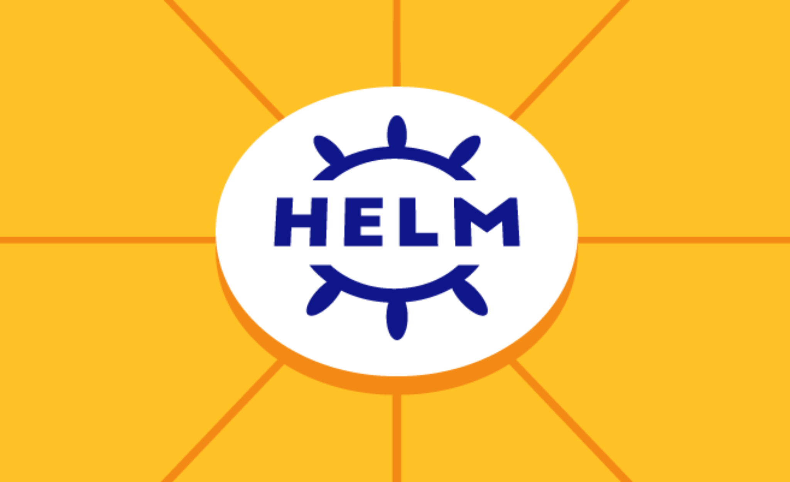
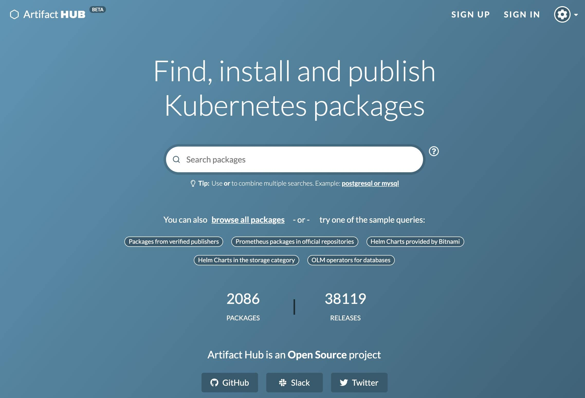

<!DOCTYPE HTML>
<html lang="zh-CN">


<head>
    <meta charset="utf-8">
    <meta name="keywords" content="Kubernetes之再识新版HELM, Escape Escpae&#39;s Python Linux Bug Linnux运维之路 Python成长笔记 Web进击之旅 Bug解决之道 文所未闻 音乐墙 关于我">
    <meta name="description" content="听摇滚,但不偏颇;也挺古典,但不安逸">
    <meta http-equiv="X-UA-Compatible" content="IE=edge">
    <meta name="viewport" content="width=device-width, initial-scale=1.0, user-scalable=no">
    <meta name="renderer" content="webkit|ie-stand|ie-comp">
    <meta name="mobile-web-app-capable" content="yes">
    <meta name="format-detection" content="telephone=no">
    <meta name="apple-mobile-web-app-capable" content="yes">
    <meta name="apple-mobile-web-app-status-bar-style" content="black-translucent">
    <!-- Global site tag (gtag.js) - Google Analytics -->


    <title>Kubernetes之再识新版HELM | Escape</title>
    <link rel="icon" type="image/png" href="/favicon.png">

    <link rel="stylesheet" type="text/css" href="/libs/awesome/css/all.css">
    <link rel="stylesheet" type="text/css" href="/libs/materialize/materialize.min.css">
    <link rel="stylesheet" type="text/css" href="/libs/aos/aos.css">
    <link rel="stylesheet" type="text/css" href="/libs/animate/animate.min.css">
    <link rel="stylesheet" type="text/css" href="/libs/lightGallery/css/lightgallery.min.css">
    <link rel="stylesheet" type="text/css" href="/css/matery.css">
    <link rel="stylesheet" type="text/css" href="/css/my.css">

    <script src="/libs/jquery/jquery.min.js"></script>

<meta name="generator" content="Hexo 5.4.0">
<style>.github-emoji { position: relative; display: inline-block; width: 1.2em; min-height: 1.2em; overflow: hidden; vertical-align: top; color: transparent; }  .github-emoji > span { position: relative; z-index: 10; }  .github-emoji img, .github-emoji .fancybox { margin: 0 !important; padding: 0 !important; border: none !important; outline: none !important; text-decoration: none !important; user-select: none !important; cursor: auto !important; }  .github-emoji img { height: 1.2em !important; width: 1.2em !important; position: absolute !important; left: 50% !important; top: 50% !important; transform: translate(-50%, -50%) !important; user-select: none !important; cursor: auto !important; } .github-emoji-fallback { color: inherit; } .github-emoji-fallback img { opacity: 0 !important; }</style>
<link rel="alternate" href="/atom.xml" title="Escape" type="application/atom+xml">
<link rel="stylesheet" href="/css/prism-tomorrow.css" type="text/css">
<link rel="stylesheet" href="/css/prism-line-numbers.css" type="text/css"></head>


<body>
    <header class="navbar-fixed">
    <nav id="headNav" class="bg-color nav-transparent">
        <div id="navContainer" class="nav-wrapper container">
            <div class="brand-logo">
                <a href="/" class="waves-effect waves-light">
                    
                    
                    
                    <span class="logo-span">Escape</span>
                </a>
            </div>
            

<a href="#" data-target="mobile-nav" class="sidenav-trigger button-collapse"><i class="fas fa-bars"></i></a>
<ul class="right nav-menu">
  
  <li class="hide-on-med-and-down nav-item">
    
    <a href="/" class="waves-effect waves-light">
      
      <i class="fas fa-home" style="zoom: 0.6;"></i>
      
      <span>首页</span>
    </a>
    
  </li>
  
  <li class="hide-on-med-and-down nav-item">
    
    <a href="/tags" class="waves-effect waves-light">
      
      <i class="fas fa-tags" style="zoom: 0.6;"></i>
      
      <span>标签</span>
    </a>
    
  </li>
  
  <li class="hide-on-med-and-down nav-item">
    
    <a href="/categories" class="waves-effect waves-light">
      
      <i class="fas fa-bookmark" style="zoom: 0.6;"></i>
      
      <span>分类</span>
    </a>
    
  </li>
  
  <li class="hide-on-med-and-down nav-item">
    
    <a href="/archives" class="waves-effect waves-light">
      
      <i class="fas fa-archive" style="zoom: 0.6;"></i>
      
      <span>归档</span>
    </a>
    
  </li>
  
  <li class="hide-on-med-and-down nav-item">
    
    <a href="/about" class="waves-effect waves-light">
      
      <i class="fas fa-user-circle" style="zoom: 0.6;"></i>
      
      <span>关于</span>
    </a>
    
  </li>
  
  <li class="hide-on-med-and-down nav-item">
    
    <a href="/friends" class="waves-effect waves-light">
      
      <i class="fas fa-address-book" style="zoom: 0.6;"></i>
      
      <span>友情链接</span>
    </a>
    
  </li>
  
  <li>
    <a href="#searchModal" class="modal-trigger waves-effect waves-light">
      <i id="searchIcon" class="fas fa-search" title="搜索" style="zoom: 0.85;"></i>
    </a>
  </li>
</ul>


<div id="mobile-nav" class="side-nav sidenav">

    <div class="mobile-head bg-color">
        
        
        
        <div class="logo-name">Escape</div>
        <div class="logo-desc">
            
            听摇滚,但不偏颇;也挺古典,但不安逸
            
        </div>
    </div>

    

    <ul class="menu-list mobile-menu-list">
        
        <li class="m-nav-item">
	  
		<a href="/" class="waves-effect waves-light">
			
			    <i class="fa-fw fas fa-home"></i>
			
			首页
		</a>
          
        </li>
        
        <li class="m-nav-item">
	  
		<a href="/tags" class="waves-effect waves-light">
			
			    <i class="fa-fw fas fa-tags"></i>
			
			标签
		</a>
          
        </li>
        
        <li class="m-nav-item">
	  
		<a href="/categories" class="waves-effect waves-light">
			
			    <i class="fa-fw fas fa-bookmark"></i>
			
			分类
		</a>
          
        </li>
        
        <li class="m-nav-item">
	  
		<a href="/archives" class="waves-effect waves-light">
			
			    <i class="fa-fw fas fa-archive"></i>
			
			归档
		</a>
          
        </li>
        
        <li class="m-nav-item">
	  
		<a href="/about" class="waves-effect waves-light">
			
			    <i class="fa-fw fas fa-user-circle"></i>
			
			关于
		</a>
          
        </li>
        
        <li class="m-nav-item">
	  
		<a href="/friends" class="waves-effect waves-light">
			
			    <i class="fa-fw fas fa-address-book"></i>
			
			友情链接
		</a>
          
        </li>
        
        
        <li><div class="divider"></div></li>
        <li>
            <a href="https://github.com/EscapeLife" class="waves-effect waves-light" target="_blank">
                <i class="fab fa-github-square fa-fw"></i>Fork Me
            </a>
        </li>
        
    </ul>
</div>


        </div>

        
            <style>
    .nav-transparent .github-corner {
        display: none !important;
    }

    .github-corner {
        position: absolute;
        z-index: 10;
        top: 0;
        right: 0;
        border: 0;
        transform: scale(1.1);
    }

    .github-corner svg {
        color: #0f9d58;
        fill: #fff;
        height: 64px;
        width: 64px;
    }

    .github-corner:hover .octo-arm {
        animation: a 0.56s ease-in-out;
    }

    .github-corner .octo-arm {
        animation: none;
    }

    @keyframes a {
        0%,
        to {
            transform: rotate(0);
        }
        20%,
        60% {
            transform: rotate(-25deg);
        }
        40%,
        80% {
            transform: rotate(10deg);
        }
    }
</style>

<a href="https://github.com/EscapeLife" class="github-corner tooltipped hide-on-med-and-down" target="_blank"
   data-tooltip="Fork Me" data-position="left" data-delay="50">
    <svg viewBox="0 0 250 250" aria-hidden="true">
        <path d="M0,0 L115,115 L130,115 L142,142 L250,250 L250,0 Z"></path>
        <path d="M128.3,109.0 C113.8,99.7 119.0,89.6 119.0,89.6 C122.0,82.7 120.5,78.6 120.5,78.6 C119.2,72.0 123.4,76.3 123.4,76.3 C127.3,80.9 125.5,87.3 125.5,87.3 C122.9,97.6 130.6,101.9 134.4,103.2"
              fill="currentColor" style="transform-origin: 130px 106px;" class="octo-arm"></path>
        <path d="M115.0,115.0 C114.9,115.1 118.7,116.5 119.8,115.4 L133.7,101.6 C136.9,99.2 139.9,98.4 142.2,98.6 C133.8,88.0 127.5,74.4 143.8,58.0 C148.5,53.4 154.0,51.2 159.7,51.0 C160.3,49.4 163.2,43.6 171.4,40.1 C171.4,40.1 176.1,42.5 178.8,56.2 C183.1,58.6 187.2,61.8 190.9,65.4 C194.5,69.0 197.7,73.2 200.1,77.6 C213.8,80.2 216.3,84.9 216.3,84.9 C212.7,93.1 206.9,96.0 205.4,96.6 C205.1,102.4 203.0,107.8 198.3,112.5 C181.9,128.9 168.3,122.5 157.7,114.1 C157.9,116.9 156.7,120.9 152.7,124.9 L141.0,136.5 C139.8,137.7 141.6,141.9 141.8,141.8 Z"
              fill="currentColor" class="octo-body"></path>
    </svg>
</a>
        
    </nav>

</header>

    
<script src="/libs/cryptojs/crypto-js.min.js"></script>
<script>
    (function() {
        let pwd = '';
        if (pwd && pwd.length > 0) {
            if (pwd !== CryptoJS.SHA256(prompt('请输入访问本文章的密码')).toString(CryptoJS.enc.Hex)) {
                alert('密码错误，将返回主页！');
                location.href = '/';
            }
        }
    })();
</script>


<div class="bg-cover pd-header post-cover" style="background-image: url('/images/kubernetes-new-helm-tool.png')">
    <div class="container" style="right: 0px;left: 0px;">
        <div class="row">
            <div class="col s12 m12 l12">
                <div class="brand">
                    <h1 class="description center-align post-title">Kubernetes之再识新版HELM</h1>
                </div>
            </div>
        </div>
    </div>
</div>


<main class="post-container content">

    
    <link rel="stylesheet" href="/libs/tocbot/tocbot.css">
<style>
    #articleContent h1::before,
    #articleContent h2::before,
    #articleContent h3::before,
    #articleContent h4::before,
    #articleContent h5::before,
    #articleContent h6::before {
        display: block;
        content: " ";
        height: 100px;
        margin-top: -100px;
        visibility: hidden;
    }

    #articleContent :focus {
        outline: none;
    }

    .toc-fixed {
        position: fixed;
        top: 64px;
    }

    .toc-widget {
        width: 345px;
        padding-left: 20px;
    }

    .toc-widget .toc-title {
        padding: 35px 0 15px 17px;
        font-size: 1.5rem;
        font-weight: bold;
        line-height: 1.5rem;
    }

    .toc-widget ol {
        padding: 0;
        list-style: none;
    }

    #toc-content {
        padding-bottom: 30px;
        overflow: auto;
    }

    #toc-content ol {
        padding-left: 10px;
    }

    #toc-content ol li {
        padding-left: 10px;
    }

    #toc-content .toc-link:hover {
        color: #42b983;
        font-weight: 700;
        text-decoration: underline;
    }

    #toc-content .toc-link::before {
        background-color: transparent;
        max-height: 25px;

        position: absolute;
        right: 23.5vw;
        display: block;
    }

    #toc-content .is-active-link {
        color: #42b983;
    }

    #floating-toc-btn {
        position: fixed;
        right: 15px;
        bottom: 76px;
        padding-top: 15px;
        margin-bottom: 0;
        z-index: 998;
    }

    #floating-toc-btn .btn-floating {
        width: 48px;
        height: 48px;
    }

    #floating-toc-btn .btn-floating i {
        line-height: 48px;
        font-size: 1.4rem;
    }
</style>
<div class="row">
    <div id="main-content" class="col s12 m12 l9">
        <!-- 文章内容详情 -->
<div id="artDetail">
    <div class="card">
        <div class="card-content article-info">
            <div class="row tag-cate">
                <div class="col s7">
                    
                    <div class="article-tag">
                        
                            <a href="/tags/Kubernetes/">
                                <span class="chip bg-color">Kubernetes</span>
                            </a>
                        
                            <a href="/tags/HELM/">
                                <span class="chip bg-color">HELM</span>
                            </a>
                        
                    </div>
                    
                </div>
                <div class="col s5 right-align">
                    
                    <div class="post-cate">
                        <i class="fas fa-bookmark fa-fw icon-category"></i>
                        
                            <a href="/categories/K8S%E5%8D%B3%E5%AD%A6%E5%8D%B3%E7%94%A8/" class="post-category">
                                K8S即学即用
                            </a>
                        
                    </div>
                    
                </div>
            </div>

            <div class="post-info">
                
                <div class="post-date info-break-policy">
                    <i class="far fa-calendar-minus fa-fw"></i>发布日期:&nbsp;&nbsp;
                    2021-09-25
                </div>
                

                
                <div class="post-date info-break-policy">
                    <i class="far fa-calendar-check fa-fw"></i>更新日期:&nbsp;&nbsp;
                    2021-09-28
                </div>
                

                
                <div class="info-break-policy">
                    <i class="far fa-file-word fa-fw"></i>文章字数:&nbsp;&nbsp;
                    2.2k
                </div>
                

                
                <div class="info-break-policy">
                    <i class="far fa-clock fa-fw"></i>阅读时长:&nbsp;&nbsp;
                    9 分
                </div>
                

                
                    <div id="busuanzi_container_page_pv" class="info-break-policy">
                        <i class="far fa-eye fa-fw"></i>阅读次数:&nbsp;&nbsp;
                        <span id="busuanzi_value_page_pv"></span>
                    </div>
				
            </div>
        </div>
        <hr class="clearfix">

        

        

        <div class="card-content article-card-content">
            <div id="articleContent">
                <blockquote>
<p><strong>Helm 是查找、分享和使用软件构建 Kubernetes 的最优方式！</strong></p>
</blockquote>
<p><code>Helm</code> 帮助您管理 <code>Kubernetes</code> 应用 —— <code>Helm</code> 图表，即使是最复杂的 <code>Kubernetes</code> 应用程序，都可以帮助您定义，安装和升级。图表 <code>Chart</code> 易于创建、发版、分享和发布，所以停止复制粘贴，开始使用 <code>Helm</code> 吧。</p>
<ul>
<li><code>Helm</code> 是什么?</li>
<li><code>Kubernetes</code> 包管理器，可以简单理解为 <code>apt</code> 或 <code>yml</code> 工具。</li>
</ul>
<p></p>
<hr>
<h2 id="1-工具特性"><a href="#1-工具特性" class="headerlink" title="1. 工具特性"></a>1. 工具特性</h2><blockquote>
<p><strong>Helm 是 CNCF 的毕业项目，由 Helm 社区维护。</strong></p>
</blockquote>
<ul>
<li><strong>复杂性管理</strong></li>
</ul>
<p>即使是最复杂的应用，图表 <code>Charts</code> 依然可以描述， 提供使用单点授权的可重复安装应用程序。</p>
<ul>
<li><strong>易于升级</strong></li>
</ul>
<p>随时随地升级和自定义的钩子消除您升级的痛苦。</p>
<ul>
<li><strong>分发简单</strong></li>
</ul>
<p>图表 <code>Charts</code> 很容易在公共或私有化服务器上发版，分发和部署站点。</p>
<ul>
<li><strong>回滚</strong></li>
</ul>
<p>使用 <code>helm rollback</code> 可以轻松回滚到之前的发布版本。</p>
<hr>
<h2 id="2-安装使用"><a href="#2-安装使用" class="headerlink" title="2. 安装使用"></a>2. 安装使用</h2><blockquote>
<p><strong>工具安装提供多种安装方式</strong></p>
</blockquote>
<p><a target="_blank" rel="noopener" href="https://helm.sh/zh/docs/topics/plugins/">https://helm.sh/zh/docs/topics/plugins/</a></p>
<ul>
<li><strong>[1] 获取 Helm 工具 - 包管理器安装</strong><ul>
<li>安装完成后，解压二进制包并添加到 <code>PATH</code>，就可以使用了！</li>
</ul>
</li>
</ul>
<pre class="line-numbers language-bash"><code class="language-bash"><span class="token comment" spellcheck="true"># homebrew(macOS)</span>
$ brew <span class="token function">install</span> helm

<span class="token comment" spellcheck="true"># Chocolatey(Windows)</span>
$ choco <span class="token function">install</span> kubernetes-helm

<span class="token comment" spellcheck="true"># Apt(Debian/Ubuntu)</span>
$ curl https://baltocdn.com/helm/signing.asc <span class="token operator">|</span> <span class="token function">sudo</span> apt-key add -
$ <span class="token function">sudo</span> <span class="token function">apt-get</span> <span class="token function">install</span> apt-transport-https --yes
$ <span class="token keyword">echo</span> <span class="token string">"deb https://baltocdn.com/helm/stable/debian/ all main"</span> <span class="token operator">|</span> <span class="token function">sudo</span> <span class="token function">tee</span> /etc/apt/sources.list.d/helm-stable-debian.list
$ <span class="token function">sudo</span> <span class="token function">apt-get</span> update
$ <span class="token function">sudo</span> <span class="token function">apt-get</span> <span class="token function">install</span> helm
<span aria-hidden="true" class="line-numbers-rows"><span></span><span></span><span></span><span></span><span></span><span></span><span></span><span></span><span></span><span></span><span></span><span></span></span></code></pre>
<ul>
<li><strong>[2] 获取 Helm 工具 - 使用脚本安装</strong><ul>
<li><code>Helm</code> 现在有个安装脚本可以自动拉取最新的 <code>Helm</code> 版本并在本地安装！</li>
</ul>
</li>
</ul>
<pre class="line-numbers language-bash"><code class="language-bash"><span class="token comment" spellcheck="true"># 直接执行安装</span>
$ curl https://raw.githubusercontent.com/helm/helm/main/scripts/get-helm-3 <span class="token operator">|</span> <span class="token function">bash</span>
<span aria-hidden="true" class="line-numbers-rows"><span></span><span></span></span></code></pre>
<ul>
<li><strong>[3] 获取 Helm 工具 - 二进制版本安装</strong><ul>
<li>每个 <code>Helm</code> 版本都提供了各种操作系统的二进制版本！</li>
</ul>
</li>
</ul>
<pre class="line-numbers language-bash"><code class="language-bash"><span class="token comment" spellcheck="true"># 下载需要的版本</span>
$ https://github.com/helm/helm/releases

<span class="token comment" spellcheck="true"># 解压压缩包</span>
$ <span class="token function">tar</span> -zxvf helm-v3.0.0-linux-amd64.tar.gz

<span class="token comment" spellcheck="true"># 移动到需要的目录中</span>
$ <span class="token function">mv</span> linux-amd64/helm /usr/local/bin/helm
<span aria-hidden="true" class="line-numbers-rows"><span></span><span></span><span></span><span></span><span></span><span></span><span></span><span></span></span></code></pre>
<hr>
<ul>
<li><strong>[4] 获取 Charts 图表</strong><ul>
<li>访问 <a target="_blank" rel="noopener" href="https://artifacthub.io/">Helm 应用中心</a> 浏览公共库大量的图表！</li>
</ul>
</li>
</ul>
<p></p>
<ul>
<li><strong>[5] 简单上手使用</strong><ul>
<li>安装好了 <code>Helm</code> 之后，可以添加一个 <code>chart</code> 仓库！</li>
</ul>
</li>
</ul>
<pre class="line-numbers language-bash"><code class="language-bash"><span class="token comment" spellcheck="true"># 添加:有效的Helm-chart仓库</span>
<span class="token comment" spellcheck="true"># 更新:确定可以拿到最新的charts列表</span>
$ helm repo add bitnami https://charts.bitnami.com/bitnami
$ helm repo add brigade https://brigadecore.github.io/charts
$ helm repo update

<span class="token comment" spellcheck="true"># 之后就可以查找相关的charts列表</span>
$ $ helm search repo bitnami
NAME                      CHART VERSION      APP VERSION      DESCRIPTION
bitnami/bitnami-common    0.0.9              0.0.9            <span class="token punctuation">..</span>.
bitnami/airflow           8.0.2              2.0.0            <span class="token punctuation">..</span>.
bitnami/apache            8.2.3              2.4.46        <span class="token punctuation">..</span>.

<span class="token comment" spellcheck="true"># 了解到这个chart的基本信息</span>
$ helm show chart bitnami/mysql
<span class="token comment" spellcheck="true"># 获取关于该chart的所有信息</span>
$ helm show all bitnami/mysql

<span class="token comment" spellcheck="true"># 安装对应版本服务</span>
$ helm <span class="token function">install</span> bitnami/mysql --generate-name
NAME: mysql-1612624192
LAST DEPLOYED: Sat Feb  6 16:09:56 2021
NAMESPACE: default
STATUS: deployed
REVISION: 1
TEST SUITE: None
NOTES: <span class="token punctuation">..</span>.

<span class="token comment" spellcheck="true"># 列出所有可被部署的版本</span>
$ helm list
NAME                NAMESPACE    REVISION    STATUS      CHART          APP VERSION
mysql-1612624192    default      1           deployed    mysql-8.3.0    8.0.23

<span class="token comment" spellcheck="true"># 卸载一个版本</span>
$ helm uninstall mysql-1612624192
release <span class="token string">"mysql-1612624192"</span> uninstalled

<span class="token comment" spellcheck="true"># 查看帮助信息</span>
$ helm get -h
<span aria-hidden="true" class="line-numbers-rows"><span></span><span></span><span></span><span></span><span></span><span></span><span></span><span></span><span></span><span></span><span></span><span></span><span></span><span></span><span></span><span></span><span></span><span></span><span></span><span></span><span></span><span></span><span></span><span></span><span></span><span></span><span></span><span></span><span></span><span></span><span></span><span></span><span></span><span></span><span></span><span></span><span></span><span></span><span></span></span></code></pre>
<hr>
<h2 id="3-三大概念"><a href="#3-三大概念" class="headerlink" title="3. 三大概念"></a>3. 三大概念</h2><blockquote>
</blockquote>
<p><code>Helm</code> 安装 <code>charts</code> 到 <code>Kubernetes</code> 集群中，每次安装都会创建一个新的 <code>release</code>。</p>
<ul>
<li><strong>Chart</strong><ul>
<li><code>Chart</code> 代表着 <code>Helm</code> 包。</li>
<li>你可以把它看作是 <code>Apt</code> 或 <code>Yum</code> 在 <code>Kubernetes</code> 中的等价物。</li>
<li>它包含在 <code>Kubernetes</code> 集群内部运行应用程序，工具或服务所需的所有资源定义。</li>
</ul>
</li>
<li><strong>Repository</strong><ul>
<li><code>Repository</code>(仓库)是用来存放和共享 <code>charts</code> 的地方。</li>
<li>它就像 <code>Fedora</code> 的软件包仓库，只不过它是供 <code>Kubernetes</code> 包所使用的。</li>
</ul>
</li>
<li><strong>Release</strong><ul>
<li><code>Release</code> 是运行在 <code>Kubernetes</code> 集群中的 <code>chart</code> 的实例。</li>
<li>一个 <code>chart</code> 通常可以在同一个集群中安装多次，每一次安装都会创建一个新的 <code>release</code>。</li>
</ul>
</li>
</ul>
<p><code>Helm</code> 按照以下顺序安装资源(这里列出主要的一些)：</p>
<ul>
<li>Namespace</li>
<li>NetworkPolicy</li>
<li>ResourceQuota</li>
<li>LimitRange</li>
<li>ServiceAccount</li>
<li>Secret</li>
<li>SecretList</li>
<li>ConfigMap</li>
<li>StorageClass</li>
<li>PersistentVolume</li>
<li>PersistentVolumeClaim</li>
<li>Role</li>
<li>RoleList</li>
<li>RoleBinding</li>
<li>RoleBindingList</li>
<li>Service</li>
<li>DaemonSet</li>
<li>Pod</li>
<li>ReplicationController</li>
<li>ReplicaSet</li>
<li>Deployment</li>
<li>HorizontalPodAutoscaler</li>
<li>StatefulSet</li>
<li>Job</li>
<li>CronJob</li>
<li>Ingress</li>
<li>APIService</li>
</ul>
<hr>
<h2 id="4-组织架构"><a href="#4-组织架构" class="headerlink" title="4. 组织架构"></a>4. 组织架构</h2><blockquote>
</blockquote>
<p><a target="_blank" rel="noopener" href="https://helm.sh/zh/docs/topics/architecture/">https://helm.sh/zh/docs/topics/architecture/</a></p>
<hr>
<h2 id="5-常用操作"><a href="#5-常用操作" class="headerlink" title="5. 常用操作"></a>5. 常用操作</h2><blockquote>
</blockquote>
<p><a target="_blank" rel="noopener" href="https://helm.sh/zh/docs/helm/helm/">https://helm.sh/zh/docs/helm/helm/</a></p>
<table>
<thead>
<tr>
<th>命令实例</th>
<th>对应功能介绍</th>
</tr>
</thead>
<tbody><tr>
<td><strong><code>helm repo add bitnami https://charts.bitnami.com/bitnami</code></strong></td>
<td>添加有效的 Helm-chart 仓库</td>
</tr>
<tr>
<td><strong><code>helm repo list</code></strong></td>
<td>查看配置的 chart 仓库</td>
</tr>
<tr>
<td><strong>``</strong></td>
<td></td>
</tr>
<tr>
<td><strong>``</strong></td>
<td></td>
</tr>
<tr>
<td><strong><code>helm search repo wordpress</code></strong></td>
<td>从添加的仓库中查找 chart 的名字</td>
</tr>
<tr>
<td><strong><code>helm install happy-panda bitnami/wordpress</code></strong></td>
<td>安装一个新的 helm 包</td>
</tr>
<tr>
<td><strong><code>helm status happy-panda</code></strong></td>
<td>来追踪展示 release 的当前状态</td>
</tr>
<tr>
<td><strong>``</strong></td>
<td></td>
</tr>
<tr>
<td><strong><code>helm show values bitnami/wordpress</code></strong></td>
<td>查看 chart 中的可配置选项</td>
</tr>
<tr>
<td><strong><code>helm uninstall happy-panda</code></strong></td>
<td>从集群中卸载一个 release</td>
</tr>
<tr>
<td><strong>``</strong></td>
<td></td>
</tr>
<tr>
<td><strong><code>helm list</code></strong></td>
<td>看到当前部署的所有 release</td>
</tr>
<tr>
<td><strong>``</strong></td>
<td></td>
</tr>
<tr>
<td><strong><code>helm pull bitnami/wordpress</code></strong></td>
<td>下载和查看一个发布的 chart</td>
</tr>
<tr>
<td><strong>``</strong></td>
<td></td>
</tr>
<tr>
<td><strong>``</strong></td>
<td></td>
</tr>
<tr>
<td><strong>``</strong></td>
<td></td>
</tr>
<tr>
<td><strong><code>helm upgrade</code></strong></td>
<td>升级 release 版本</td>
</tr>
<tr>
<td><strong><code>helm rollback</code></strong></td>
<td>恢复 release 版本</td>
</tr>
<tr>
<td><strong>``</strong></td>
<td></td>
</tr>
<tr>
<td><strong>``</strong></td>
<td></td>
</tr>
</tbody></table>
<hr>
<h2 id="6-值传递方式"><a href="#6-值传递方式" class="headerlink" title="6. 值传递方式"></a>6. 值传递方式</h2><blockquote>
<p>安装前自定义 chart</p>
</blockquote>
<p><a target="_blank" rel="noopener" href="https://helm.sh/zh/docs/chart_best_practices/conventions/">https://helm.sh/zh/docs/chart_best_practices/conventions/</a><br><a target="_blank" rel="noopener" href="https://helm.sh/zh/docs/chart_best_practices/values/">https://helm.sh/zh/docs/chart_best_practices/values/</a></p>
<p>上述安装方式只会使用 chart 的默认配置选项。很多时候，我们需要自定义 chart 来指定我们想要的配置。</p>
<p>使用 <code>helm show values</code> 可以查看 chart 中的可配置选项：</p>
<pre class="line-numbers language-bash"><code class="language-bash">$ helm show values bitnami/wordpress

image:
  registry: docker.io
  repository: bitnami/wordpress
  tag: 5.6.0-debian-10-r35
  <span class="token punctuation">[</span><span class="token punctuation">..</span><span class="token punctuation">]</span>
<span aria-hidden="true" class="line-numbers-rows"><span></span><span></span><span></span><span></span><span></span><span></span><span></span></span></code></pre>
<p>然后，你可以使用 YAML 格式的文件覆盖上述任意配置项，并在安装过程中使用该文件。</p>
<pre class="line-numbers language-bash"><code class="language-bash">$ <span class="token keyword">echo</span> <span class="token string">'{mariadb.auth.database: user0db, mariadb.auth.username: user0}'</span> <span class="token operator">></span> values.yaml
$ helm <span class="token function">install</span> -f values.yaml bitnami/wordpress --generate-name
<span aria-hidden="true" class="line-numbers-rows"><span></span><span></span></span></code></pre>
<p>上述命令将为 MariaDB 创建一个名称为 &nbsp;<code>user0</code>&nbsp; 的默认用户，并且授予该用户访问新建的 &nbsp;<code>user0db</code>&nbsp; 数据库的权限。chart 中的其他默认配置保持不变。</p>
<p>安装过程中有两种方式传递配置数据：</p>
<ul>
<li><code>--values</code>&nbsp;(或 &nbsp;<code>-f</code>)：使用 YAML 文件覆盖配置。可以指定多次，优先使用最右边的文件。</li>
<li><code>--set</code>：通过命令行的方式对指定项进行覆盖。</li>
</ul>
<p>如果同时使用两种方式，则 &nbsp;<code>--set</code>&nbsp; 中的值会被合并到 &nbsp;<code>--values</code>&nbsp; 中，但是 &nbsp;<code>--set</code>&nbsp; 中的值优先级更高。在<code>--set</code>&nbsp; 中覆盖的内容会被被保存在 ConfigMap 中。可以通过 &nbsp;<code>helm get values &lt;release-name&gt;</code>&nbsp; 来查看指定 release 中 &nbsp;<code>--set</code>&nbsp; 设置的值。也可以通过运行 &nbsp;<code>helm upgrade</code>&nbsp; 并指定 &nbsp;<code>--reset-values</code>&nbsp; 字段来清除 &nbsp;<code>--set</code>&nbsp; 中设置的值。</p>
<p><code>--set</code>&nbsp; 的格式和限制</p>
<p><code>--set</code>&nbsp; 选项使用 0 或多个 name/value 对。最简单的用法类似于：<code>--set name=value</code>，等价于如下 YAML 格式：</p>
<pre><code>name: value
</code></pre>
<p>多个值使用逗号分割，因此 &nbsp;<code>--set a=b,c=d</code>&nbsp; 的 YAML 表示是：</p>
<pre class="line-numbers language-yaml"><code class="language-yaml"><span class="token key atrule">a</span><span class="token punctuation">:</span> b
<span class="token key atrule">c</span><span class="token punctuation">:</span> d

支持更复杂的表达式。例如，`<span class="token punctuation">-</span><span class="token punctuation">-</span>set outer.inner=value`<span class="token important">&amp;nbsp</span>;被转换成了：

```yaml
<span class="token key atrule">outer</span><span class="token punctuation">:</span>
  <span class="token key atrule">inner</span><span class="token punctuation">:</span> value
<span aria-hidden="true" class="line-numbers-rows"><span></span><span></span><span></span><span></span><span></span><span></span><span></span><span></span></span></code></pre>
<p>列表使用花括号（<code>{}</code>）来表示。例如，<code>--set name={a, b, c}</code>&nbsp; 被转换成了：</p>
<pre class="line-numbers language-yaml"><code class="language-yaml"><span class="token key atrule">name</span><span class="token punctuation">:</span>
  <span class="token punctuation">-</span> a
  <span class="token punctuation">-</span> b
  <span class="token punctuation">-</span> c
<span aria-hidden="true" class="line-numbers-rows"><span></span><span></span><span></span><span></span></span></code></pre>
<p>从 2.5.0 版本开始，可以使用数组下标的语法来访问列表中的元素。例如 &nbsp;<code>--set servers[0].port=80</code>&nbsp; 就变成了：</p>
<pre class="line-numbers language-yaml"><code class="language-yaml"><span class="token key atrule">servers</span><span class="token punctuation">:</span>
  <span class="token punctuation">-</span> <span class="token key atrule">port</span><span class="token punctuation">:</span> <span class="token number">80</span>
<span aria-hidden="true" class="line-numbers-rows"><span></span><span></span></span></code></pre>
<p>多个值也可以通过这种方式来设置。<code>--set servers[0].port=80,servers[0].host=example</code>&nbsp; 变成了：</p>
<pre class="line-numbers language-yaml"><code class="language-yaml"><span class="token key atrule">servers</span><span class="token punctuation">:</span>
  <span class="token punctuation">-</span> <span class="token key atrule">port</span><span class="token punctuation">:</span> <span class="token number">80</span>
    <span class="token key atrule">host</span><span class="token punctuation">:</span> example
<span aria-hidden="true" class="line-numbers-rows"><span></span><span></span><span></span></span></code></pre>
<p>如果需要在 &nbsp;<code>--set</code>&nbsp; 中使用特殊字符，你可以使用反斜线来进行转义；<code>--set name=value1\,value2</code>&nbsp; 就变成了：</p>
<pre class="line-numbers language-yaml"><code class="language-yaml"><span class="token key atrule">name</span><span class="token punctuation">:</span> <span class="token string">"value1,value2"</span>
<span aria-hidden="true" class="line-numbers-rows"><span></span></span></code></pre>
<p>类似的，你也可以转义点  序列（英文句号）。这可能会在 chart 使用 &nbsp;<code>toYaml</code>&nbsp; 函数来解析 annotations，labels，和 node selectors 时派上用场。<code>--set nodeSelector."kubernetes\.io/role"=master</code>&nbsp; 语法就变成了：</p>
<pre class="line-numbers language-yaml"><code class="language-yaml"><span class="token key atrule">nodeSelector</span><span class="token punctuation">:</span>
  <span class="token key atrule">kubernetes.io/role</span><span class="token punctuation">:</span> master
<span aria-hidden="true" class="line-numbers-rows"><span></span><span></span></span></code></pre>
<p>深层嵌套的数据结构可能会很难用 &nbsp;<code>--set</code>&nbsp; 表达。我们希望 Chart 的设计者们在设计 &nbsp;<code>values.yaml</code>&nbsp; 文件的格式时，考虑到 &nbsp;<code>--set</code>&nbsp; 的使用。（更多内容请查看 &nbsp;<a target="_blank" rel="noopener" href="https://helm.sh/docs/chart_template_guide/values_files/">Values 文件</a>）</p>
<hr>
<h2 id="7-模板的使用"><a href="#7-模板的使用" class="headerlink" title="7. 模板的使用"></a>7. 模板的使用</h2><blockquote>
</blockquote>
<p><a target="_blank" rel="noopener" href="https://helm.sh/zh/docs/howto/charts_tips_and_tricks/">https://helm.sh/zh/docs/howto/charts_tips_and_tricks/</a><br><a target="_blank" rel="noopener" href="https://helm.sh/zh/docs/chart_best_practices/templates/">https://helm.sh/zh/docs/chart_best_practices/templates/</a></p>
<hr>
<h2 id="8-自定义开发"><a href="#8-自定义开发" class="headerlink" title="8. 自定义开发"></a>8. 自定义开发</h2><blockquote>
</blockquote>
<p><a target="_blank" rel="noopener" href="https://helm.sh/zh/docs/topics/charts/">https://helm.sh/zh/docs/topics/charts/</a><br><a target="_blank" rel="noopener" href="https://helm.sh/zh/docs/chart_best_practices/pods/">https://helm.sh/zh/docs/chart_best_practices/pods/</a><br><a target="_blank" rel="noopener" href="https://helm.sh/zh/docs/chart_template_guide/getting_started/">https://helm.sh/zh/docs/chart_template_guide/getting_started/</a></p>
<p><a target="_blank" rel="noopener" href="https://helm.sh/zh/docs/topics/charts">chart 开发指南</a>&nbsp; 介绍了如何开发你自己的 chart。 但是你也可以通过使用 &nbsp;<code>helm create</code>&nbsp; 命令来快速开始：</p>
<pre class="line-numbers language-bash"><code class="language-bash">$ helm create deis-workflow
Creating deis-workflow
<span aria-hidden="true" class="line-numbers-rows"><span></span><span></span></span></code></pre>
<p>现在，<code>./deis-workflow</code>&nbsp; 目录下已经有一个 chart 了。你可以编辑它并创建你自己的模版。</p>
<p>在编辑 chart 时，可以通过 &nbsp;<code>helm lint</code>&nbsp; 验证格式是否正确。</p>
<p>当准备将 chart 打包分发时，你可以运行 &nbsp;<code>helm package</code>&nbsp; 命令：</p>
<pre class="line-numbers language-bash"><code class="language-bash">$ helm package deis-workflow
deis-workflow-0.1.0.tgz
<span aria-hidden="true" class="line-numbers-rows"><span></span><span></span></span></code></pre>
<p>然后这个 chart 就可以很轻松的通过 &nbsp;<code>helm install</code>&nbsp; 命令安装：</p>
<pre class="line-numbers language-bash"><code class="language-bash">$ helm <span class="token function">install</span> deis-workflow ./deis-workflow-0.1.0.tgz
<span class="token punctuation">..</span>.
<span aria-hidden="true" class="line-numbers-rows"><span></span><span></span></span></code></pre>
<p>打包好的 chart 可以上传到 chart 仓库中。查看 &nbsp;<a target="_blank" rel="noopener" href="https://helm.sh/zh/docs/topics/chart_repository">Helm chart 仓库</a>获取更多信息。</p>
<hr>
<h2 id="9-钩子的使用"><a href="#9-钩子的使用" class="headerlink" title="9. 钩子的使用"></a>9. 钩子的使用</h2><blockquote>
</blockquote>
<p><a target="_blank" rel="noopener" href="https://helm.sh/zh/docs/topics/charts_hooks/">https://helm.sh/zh/docs/topics/charts_hooks/</a></p>
<hr>
<h2 id="10-仓库的创建"><a href="#10-仓库的创建" class="headerlink" title="10. 仓库的创建"></a>10. 仓库的创建</h2><blockquote>
</blockquote>
<p><a target="_blank" rel="noopener" href="https://helm.sh/zh/docs/topics/chart_repository/">https://helm.sh/zh/docs/topics/chart_repository/</a><br><a target="_blank" rel="noopener" href="https://helm.sh/zh/docs/topics/registries/">https://helm.sh/zh/docs/topics/registries/</a></p>
<hr>
<h2 id="11-自动化发布"><a href="#11-自动化发布" class="headerlink" title="11. 自动化发布"></a>11. 自动化发布</h2><blockquote>
<p>Chart 发布操作用以自动化 GitHub 的页面 Chart</p>
</blockquote>
<hr>
<h2 id="12-新版本变化"><a href="#12-新版本变化" class="headerlink" title="12. 新版本变化"></a>12. 新版本变化</h2><blockquote>
</blockquote>
<p><a target="_blank" rel="noopener" href="https://helm.sh/zh/docs/topics/v2_v3_migration/">https://helm.sh/zh/docs/topics/v2_v3_migration/</a></p>
<hr>
<h2 id="参考链接"><a href="#参考链接" class="headerlink" title="参考链接"></a>参考链接</h2><blockquote>
<p><strong>送人玫瑰，手有余香！</strong></p>
</blockquote>
<ul>
<li><a target="_blank" rel="noopener" href="https://helm.sh/zh/">Helm 官方中文文档</a></li>
</ul>

                
            </div>
            <hr/>

            

    <div class="reprint" id="reprint-statement">
        
            <div class="reprint__author">
                <span class="reprint-meta" style="font-weight: bold;">
                    <i class="fas fa-user">
                        文章作者:
                    </i>
                </span>
                <span class="reprint-info">
                    <a href="/about" rel="external nofollow noreferrer">Escape</a>
                </span>
            </div>
            <div class="reprint__type">
                <span class="reprint-meta" style="font-weight: bold;">
                    <i class="fas fa-link">
                        文章链接:
                    </i>
                </span>
                <span class="reprint-info">
                    <a href="https://www.escapelife.site/posts/eb8ef4fd.html">https://www.escapelife.site/posts/eb8ef4fd.html</a>
                </span>
            </div>
            <div class="reprint__notice">
                <span class="reprint-meta" style="font-weight: bold;">
                    <i class="fas fa-copyright">
                        版权声明:
                    </i>
                </span>
                <span class="reprint-info">
                    本博客所有文章除特別声明外，均采用
                    <a href="https://creativecommons.org/licenses/by/4.0/deed.zh" rel="external nofollow noreferrer" target="_blank">CC BY 4.0</a>
                    许可协议。转载请注明来源
                    <a href="/about" target="_blank">Escape</a>
                    !
                </span>
            </div>
        
    </div>

    <script async defer>
      document.addEventListener("copy", function (e) {
        let toastHTML = '<span>复制成功，请遵循本文的转载规则</span><button class="btn-flat toast-action" onclick="navToReprintStatement()" style="font-size: smaller">查看</a>';
        M.toast({html: toastHTML})
      });

      function navToReprintStatement() {
        $("html, body").animate({scrollTop: $("#reprint-statement").offset().top - 80}, 800);
      }
    </script>


            <div class="tag_share" style="display: block;">
                <div class="post-meta__tag-list" style="display: inline-block;">
                    
                        <div class="article-tag">
                            
                                <a href="/tags/Kubernetes/">
                                    <span class="chip bg-color">Kubernetes</span>
                                </a>
                            
                                <a href="/tags/HELM/">
                                    <span class="chip bg-color">HELM</span>
                                </a>
                            
                        </div>
                    
                </div>
                <div class="post_share" style="zoom: 80%; width: fit-content; display: inline-block; float: right; margin: -0.15rem 0;">
                    <link rel="stylesheet" type="text/css" href="/libs/share/css/share.min.css">
<div id="article-share">

    
    <div class="social-share" data-sites="twitter,facebook,google,qq,qzone,wechat,weibo,douban,linkedin" data-wechat-qrcode-helper="<p>微信扫一扫即可分享！</p>"></div>
    <script src="/libs/share/js/social-share.min.js"></script>
    

    

</div>

                </div>
            </div>
            
                <style>
    #reward {
        margin: 40px 0;
        text-align: center;
    }

    #reward .reward-link {
        font-size: 1.4rem;
        line-height: 38px;
    }

    #reward .btn-floating:hover {
        box-shadow: 0 6px 12px rgba(0, 0, 0, 0.2), 0 5px 15px rgba(0, 0, 0, 0.2);
    }

    #rewardModal {
        width: 320px;
        height: 350px;
    }

    #rewardModal .reward-title {
        margin: 15px auto;
        padding-bottom: 5px;
    }

    #rewardModal .modal-content {
        padding: 10px;
    }

    #rewardModal .close {
        position: absolute;
        right: 15px;
        top: 15px;
        color: rgba(0, 0, 0, 0.5);
        font-size: 1.3rem;
        line-height: 20px;
        cursor: pointer;
    }

    #rewardModal .close:hover {
        color: #ef5350;
        transform: scale(1.3);
        -moz-transform:scale(1.3);
        -webkit-transform:scale(1.3);
        -o-transform:scale(1.3);
    }

    #rewardModal .reward-tabs {
        margin: 0 auto;
        width: 210px;
    }

    .reward-tabs .tabs {
        height: 38px;
        margin: 10px auto;
        padding-left: 0;
    }

    .reward-content ul {
        padding-left: 0 !important;
    }

    .reward-tabs .tabs .tab {
        height: 38px;
        line-height: 38px;
    }

    .reward-tabs .tab a {
        color: #fff;
        background-color: #ccc;
    }

    .reward-tabs .tab a:hover {
        background-color: #ccc;
        color: #fff;
    }

    .reward-tabs .wechat-tab .active {
        color: #fff !important;
        background-color: #22AB38 !important;
    }

    .reward-tabs .alipay-tab .active {
        color: #fff !important;
        background-color: #019FE8 !important;
    }

    .reward-tabs .reward-img {
        width: 210px;
        height: 210px;
    }
</style>

<div id="reward">
    <a href="#rewardModal" class="reward-link modal-trigger btn-floating btn-medium waves-effect waves-light red">赏</a>

    <!-- Modal Structure -->
    <div id="rewardModal" class="modal">
        <div class="modal-content">
            <a class="close modal-close"><i class="fas fa-times"></i></a>
            <h4 class="reward-title">你的赏识是我前进的动力</h4>
            <div class="reward-content">
                <div class="reward-tabs">
                    <ul class="tabs row">
                        <li class="tab col s6 alipay-tab waves-effect waves-light"><a href="#alipay">支付宝</a></li>
                        <li class="tab col s6 wechat-tab waves-effect waves-light"><a href="#wechat">微 信</a></li>
                    </ul>
                    <div id="alipay">
                        
                    </div>
                    <div id="wechat">
                        
                    </div>
                </div>
            </div>
        </div>
    </div>
</div>

<script>
    $(function () {
        $('.tabs').tabs();
    });
</script>

            
        </div>
    </div>

    

    

    

    

    

    

    

    

    

<article id="prenext-posts" class="prev-next articles">
    <div class="row article-row">
        
        <div class="article col s12 m6" data-aos="fade-up">
            <div class="article-badge left-badge text-color">
                <i class="fas fa-chevron-left"></i>&nbsp;上一篇</div>
            <div class="card">
                <a href="/posts/6cc0b7a.html">
                    <div class="card-image">
                        
                        
                        
                        <span class="card-title">2021年第三季度总结</span>
                    </div>
                </a>
                <div class="card-content article-content">
                    <div class="summary block-with-text">
                        
                            
                        
                    </div>
                    <div class="publish-info">
                        <span class="publish-date">
                            <i class="far fa-clock fa-fw icon-date"></i>2021-09-30
                        </span>
                        <span class="publish-author">
                            
                            <i class="fas fa-bookmark fa-fw icon-category"></i>
                            
                            <a href="/categories/Cycle%E6%9C%88%E5%BA%A6%E6%80%BB%E7%BB%93/" class="post-category">
                                    Cycle月度总结
                                </a>
                            
                            
                        </span>
                    </div>
                </div>
                
                <div class="card-action article-tags">
                    
                    <a href="/tags/Journal/">
                        <span class="chip bg-color">Journal</span>
                    </a>
                    
                    <a href="/tags/2021/">
                        <span class="chip bg-color">2021</span>
                    </a>
                    
                </div>
                
            </div>
        </div>
        
        
        <div class="article col s12 m6" data-aos="fade-up">
            <div class="article-badge right-badge text-color">
                下一篇&nbsp;<i class="fas fa-chevron-right"></i>
            </div>
            <div class="card">
                <a href="/posts/758bc24b.html">
                    <div class="card-image">
                        
                        
                        
                        <span class="card-title">Python代码安全指南</span>
                    </div>
                </a>
                <div class="card-content article-content">
                    <div class="summary block-with-text">
                        
                            
                        
                    </div>
                    <div class="publish-info">
                            <span class="publish-date">
                                <i class="far fa-clock fa-fw icon-date"></i>2021-09-18
                            </span>
                        <span class="publish-author">
                            
                            <i class="fas fa-bookmark fa-fw icon-category"></i>
                            
                            <a href="/categories/Python%E4%BD%BF%E7%94%A8%E6%8A%80%E5%B7%A7/" class="post-category">
                                    Python使用技巧
                                </a>
                            
                            
                        </span>
                    </div>
                </div>
                
                <div class="card-action article-tags">
                    
                    <a href="/tags/Python/">
                        <span class="chip bg-color">Python</span>
                    </a>
                    
                    <a href="/tags/Security/">
                        <span class="chip bg-color">Security</span>
                    </a>
                    
                </div>
                
            </div>
        </div>
        
    </div>
</article>

</div>


<!-- 代码块功能依赖 -->
<script type="text/javascript" src="/libs/codeBlock/codeBlockFuction.js"></script>

<!-- 代码语言 -->

<script type="text/javascript" src="/libs/codeBlock/codeLang.js"></script>


<!-- 代码块复制 -->

<script type="text/javascript" src="/libs/codeBlock/codeCopy.js"></script>


<!-- 代码块收缩 -->

<script type="text/javascript" src="/libs/codeBlock/codeShrink.js"></script>


    </div>
    <div id="toc-aside" class="expanded col l3 hide-on-med-and-down">
        <div class="toc-widget card" style="background-color: white;">
            <div class="toc-title"><i class="far fa-list-alt"></i>&nbsp;&nbsp;目录</div>
            <div id="toc-content"></div>
        </div>
    </div>
</div>

<!-- TOC 悬浮按钮. -->

<div id="floating-toc-btn" class="hide-on-med-and-down">
    <a class="btn-floating btn-large bg-color">
        <i class="fas fa-list-ul"></i>
    </a>
</div>


<script src="/libs/tocbot/tocbot.min.js"></script>
<script>
    $(function () {
        tocbot.init({
            tocSelector: '#toc-content',
            contentSelector: '#articleContent',
            headingsOffset: -($(window).height() * 0.4 - 45),
            collapseDepth: Number('4'),
            headingSelector: 'h2, h3, h4, h5'
        });

        // modify the toc link href to support Chinese.
        let i = 0;
        let tocHeading = 'toc-heading-';
        $('#toc-content a').each(function () {
            $(this).attr('href', '#' + tocHeading + (++i));
        });

        // modify the heading title id to support Chinese.
        i = 0;
        $('#articleContent').children('h2, h3, h4, h5').each(function () {
            $(this).attr('id', tocHeading + (++i));
        });

        // Set scroll toc fixed.
        let tocHeight = parseInt($(window).height() * 0.4 - 64);
        let $tocWidget = $('.toc-widget');
        $(window).scroll(function () {
            let scroll = $(window).scrollTop();
            /* add post toc fixed. */
            if (scroll > tocHeight) {
                $tocWidget.addClass('toc-fixed');
            } else {
                $tocWidget.removeClass('toc-fixed');
            }
        });

        
        /* 修复文章卡片 div 的宽度. */
        let fixPostCardWidth = function (srcId, targetId) {
            let srcDiv = $('#' + srcId);
            if (srcDiv.length === 0) {
                return;
            }

            let w = srcDiv.width();
            if (w >= 450) {
                w = w + 21;
            } else if (w >= 350 && w < 450) {
                w = w + 18;
            } else if (w >= 300 && w < 350) {
                w = w + 16;
            } else {
                w = w + 14;
            }
            $('#' + targetId).width(w);
        };

        // 切换TOC目录展开收缩的相关操作.
        const expandedClass = 'expanded';
        let $tocAside = $('#toc-aside');
        let $mainContent = $('#main-content');
        $('#floating-toc-btn .btn-floating').click(function () {
            if ($tocAside.hasClass(expandedClass)) {
                $tocAside.removeClass(expandedClass).hide();
                $mainContent.removeClass('l9');
            } else {
                $tocAside.addClass(expandedClass).show();
                $mainContent.addClass('l9');
            }
            fixPostCardWidth('artDetail', 'prenext-posts');
        });
        
    });
</script>

    

</main>


    <footer class="page-footer bg-color">
    
        <link rel="stylesheet" href="/libs/aplayer/APlayer.min.css">
<style>
    .aplayer .aplayer-lrc p {
        
        display: none;
        
        font-size: 12px;
        font-weight: 700;
        line-height: 16px !important;
    }

    .aplayer .aplayer-lrc p.aplayer-lrc-current {
        
        display: none;
        
        font-size: 15px;
        color: #42b983;
    }

    
    .aplayer.aplayer-fixed.aplayer-narrow .aplayer-body {
        left: -66px !important;
    }

    .aplayer.aplayer-fixed.aplayer-narrow .aplayer-body:hover {
        left: 0px !important;
    }

    
</style>
<div class="">
    
    <div class="row">
        <meting-js class="col l8 offset-l2 m10 offset-m1 s12"
                   server="netease"
                   type="playlist"
                   id="764454432"
                   fixed='true'
                   autoplay='false'
                   theme='#42b983'
                   loop='all'
                   order='random'
                   preload='none'
                   volume='0.7'
                   list-folded='true'
        >
        </meting-js>
    </div>
</div>

<script src="/libs/aplayer/APlayer.min.js"></script>
<script src="https://cdn.jsdelivr.net/npm/meting@2/dist/Meting.min.js"></script>

    

    <div class="container row center-align"
         style="margin-bottom: 15px !important;">
        <div class="col s12 m8 l8 copy-right">
            Copyright&nbsp;&copy;
            
                <span id="year">2017-2022</span>
            
            <span id="year">2017</span>
            <a href="/about" target="_blank">Escape</a>
            |&nbsp;Powered by&nbsp;<a href="https://hexo.io/" target="_blank">Hexo</a>
            |&nbsp;Theme&nbsp;<a href="https://github.com/blinkfox/hexo-theme-matery" target="_blank">Matery</a>
            <br>
            
                &nbsp;<i class="fas fa-chart-area"></i>&nbsp;站点总字数:&nbsp;<span
                        class="white-color">1239.2k</span>
            
            
            
                
            
            
                <span id="busuanzi_container_site_pv">
                &nbsp;|&nbsp;<i class="far fa-eye"></i>&nbsp;总访问量:&nbsp;
                    <span id="busuanzi_value_site_pv" class="white-color"></span>
            </span>
            
            
                <span id="busuanzi_container_site_uv">
                &nbsp;|&nbsp;<i class="fas fa-users"></i>&nbsp;总访问人数:&nbsp;
                    <span id="busuanzi_value_site_uv" class="white-color"></span>
            </span>
            
            <br>

            <!-- 运行天数提醒. -->
            
                <span id="sitetime"> Loading ...</span>
                <script>
                    var calcSiteTime = function () {
                        var seconds = 1000;
                        var minutes = seconds * 60;
                        var hours = minutes * 60;
                        var days = hours * 24;
                        var years = days * 365;
                        var today = new Date();
                        var startYear = "2017";
                        var startMonth = "2";
                        var startDate = "14";
                        var startHour = "0";
                        var startMinute = "0";
                        var startSecond = "0";
                        var todayYear = today.getFullYear();
                        var todayMonth = today.getMonth() + 1;
                        var todayDate = today.getDate();
                        var todayHour = today.getHours();
                        var todayMinute = today.getMinutes();
                        var todaySecond = today.getSeconds();
                        var t1 = Date.UTC(startYear, startMonth, startDate, startHour, startMinute, startSecond);
                        var t2 = Date.UTC(todayYear, todayMonth, todayDate, todayHour, todayMinute, todaySecond);
                        var diff = t2 - t1;
                        var diffYears = Math.floor(diff / years);
                        var diffDays = Math.floor((diff / days) - diffYears * 365);

                        // 区分是否有年份.
                        var language = 'zh-CN';
                        if (startYear === String(todayYear)) {
                            document.getElementById("year").innerHTML = todayYear;
                            var daysTip = 'This site has been running for ' + diffDays + ' days';
                            if (language === 'zh-CN') {
                                daysTip = '本站已运行 ' + diffDays + ' 天';
                            } else if (language === 'zh-HK') {
                                daysTip = '本站已運行 ' + diffDays + ' 天';
                            }
                            document.getElementById("sitetime").innerHTML = daysTip;
                        } else {
                            document.getElementById("year").innerHTML = startYear + " - " + todayYear;
                            var yearsAndDaysTip = 'This site has been running for ' + diffYears + ' years and '
                                + diffDays + ' days';
                            if (language === 'zh-CN') {
                                yearsAndDaysTip = '本站已运行 ' + diffYears + ' 年 ' + diffDays + ' 天';
                            } else if (language === 'zh-HK') {
                                yearsAndDaysTip = '本站已運行 ' + diffYears + ' 年 ' + diffDays + ' 天';
                            }
                            document.getElementById("sitetime").innerHTML = yearsAndDaysTip;
                        }
                    }

                    calcSiteTime();
                </script>
            
            <br>
            
        </div>
        <div class="col s12 m4 l4 social-link social-statis">
    <a href="https://github.com/EscapeLife" class="tooltipped" target="_blank" data-tooltip="访问我的GitHub" data-position="top" data-delay="50">
        <i class="fab fa-github"></i>
    </a>


    <a href="mailto:wenpanhappy@126.com" class="tooltipped" target="_blank" data-tooltip="邮件联系我" data-position="top" data-delay="50">
        <i class="fas fa-envelope-open"></i>
    </a>


    <a href="/atom.xml" class="tooltipped" target="_blank" data-tooltip="RSS 订阅" data-position="top" data-delay="50">
        <i class="fas fa-rss"></i>
    </a>

</div>
    </div>
</footer>

<div class="progress-bar"></div>


    <!-- 搜索遮罩框 -->
<div id="searchModal" class="modal">
    <div class="modal-content">
        <div class="search-header">
            <span class="title"><i class="fas fa-search"></i>&nbsp;&nbsp;搜索</span>
            <input type="search" id="searchInput" name="s" placeholder="请输入搜索的关键字"
                   class="search-input">
        </div>
        <div id="searchResult"></div>
    </div>
</div>

<script type="text/javascript">
$(function () {
    var searchFunc = function (path, search_id, content_id) {
        'use strict';
        $.ajax({
            url: path,
            dataType: "xml",
            success: function (xmlResponse) {
                // get the contents from search data
                var datas = $("entry", xmlResponse).map(function () {
                    return {
                        title: $("title", this).text(),
                        content: $("content", this).text(),
                        url: $("url", this).text()
                    };
                }).get();
                var $input = document.getElementById(search_id);
                var $resultContent = document.getElementById(content_id);
                $input.addEventListener('input', function () {
                    var str = '<ul class=\"search-result-list\">';
                    var keywords = this.value.trim().toLowerCase().split(/[\s\-]+/);
                    $resultContent.innerHTML = "";
                    if (this.value.trim().length <= 0) {
                        return;
                    }
                    // perform local searching
                    datas.forEach(function (data) {
                        var isMatch = true;
                        var data_title = data.title.trim().toLowerCase();
                        var data_content = data.content.trim().replace(/<[^>]+>/g, "").toLowerCase();
                        var data_url = data.url;
                        data_url = data_url.indexOf('/') === 0 ? data.url : '/' + data_url;
                        var index_title = -1;
                        var index_content = -1;
                        var first_occur = -1;
                        // only match artiles with not empty titles and contents
                        if (data_title !== '' && data_content !== '') {
                            keywords.forEach(function (keyword, i) {
                                index_title = data_title.indexOf(keyword);
                                index_content = data_content.indexOf(keyword);
                                if (index_title < 0 && index_content < 0) {
                                    isMatch = false;
                                } else {
                                    if (index_content < 0) {
                                        index_content = 0;
                                    }
                                    if (i === 0) {
                                        first_occur = index_content;
                                    }
                                }
                            });
                        }
                        // show search results
                        if (isMatch) {
                            str += "<li><a href='" + data_url + "' class='search-result-title'>" + data_title + "</a>";
                            var content = data.content.trim().replace(/<[^>]+>/g, "");
                            if (first_occur >= 0) {
                                // cut out 100 characters
                                var start = first_occur - 20;
                                var end = first_occur + 80;
                                if (start < 0) {
                                    start = 0;
                                }
                                if (start === 0) {
                                    end = 100;
                                }
                                if (end > content.length) {
                                    end = content.length;
                                }
                                var match_content = content.substr(start, end);
                                // highlight all keywords
                                keywords.forEach(function (keyword) {
                                    var regS = new RegExp(keyword, "gi");
                                    match_content = match_content.replace(regS, "<em class=\"search-keyword\">" + keyword + "</em>");
                                });

                                str += "<p class=\"search-result\">" + match_content + "...</p>"
                            }
                            str += "</li>";
                        }
                    });
                    str += "</ul>";
                    $resultContent.innerHTML = str;
                });
            }
        });
    };

    searchFunc('/search.xml', 'searchInput', 'searchResult');
});
</script>

    <!-- 回到顶部按钮 -->
<div id="backTop" class="top-scroll">
    <a class="btn-floating btn-large waves-effect waves-light" href="#!">
        <i class="fas fa-arrow-up"></i>
    </a>
</div>


    <script src="/libs/materialize/materialize.min.js"></script>
    <script src="/libs/masonry/masonry.pkgd.min.js"></script>
    <script src="/libs/aos/aos.js"></script>
    <script src="/libs/scrollprogress/scrollProgress.min.js"></script>
    <script src="/libs/lightGallery/js/lightgallery-all.min.js"></script>
    <script src="/js/matery.js"></script>

    <!-- Baidu Analytics -->

    <!-- Baidu Push -->

<script>
    (function () {
        var bp = document.createElement('script');
        var curProtocol = window.location.protocol.split(':')[0];
        if (curProtocol === 'https') {
            bp.src = 'https://zz.bdstatic.com/linksubmit/push.js';
        } else {
            bp.src = 'http://push.zhanzhang.baidu.com/push.js';
        }
        var s = document.getElementsByTagName("script")[0];
        s.parentNode.insertBefore(bp, s);
    })();
</script>

    
    <script src="/libs/others/clicklove.js" async="async"></script>
    
    
    <script async src="/libs/others/busuanzi.pure.mini.js"></script>
    

    

    

    <!--腾讯兔小巢-->
    
    

    

    
    <script type="text/javascript" src="/libs/background/ribbon-dynamic.js" async="async"></script>
    

    
    <script src="/libs/instantpage/instantpage.js" type="module"></script>
    

</body>

</html>
